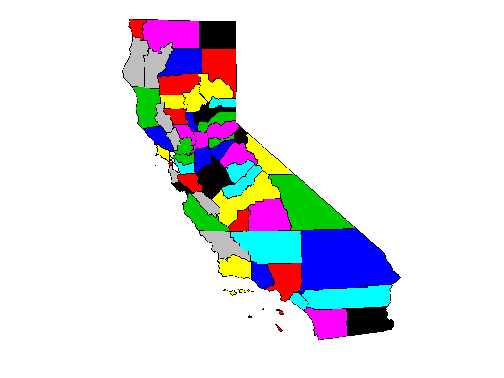

Week 1:
Spatial Data Analysis with R
April 19, 2018
Importing and Plotting Vector Data
Importing Vector Data: rgdal
rgdal is a wrapper for the Geospatial Data Abstraction Library (GDAL) library.
It provides drivers for a wide range of vector and raster data formats.
Data come in as Spatial* objects (sp package).
- Knows how to read project info
library(sp)
library(rgdal)
Import Shapefiles
View layers in a directory:
library(rgdal)
ogrListLayers(dsn)
Where dsn is a directory.
ogrListLayers("../exercises/data")
## [1] "ca_counties_census" "sf_bnd" "sf_neighborhoods"
## attr(,"driver")
## [1] "ESRI Shapefile"
## attr(,"nlayers")
## [1] 3
View metadata before importing:
ogrInfo(dsn, shape_file_name)
where shape_file_name is the name of the directory, minus the .shp extension
To import, use readOGR()
ca_counties <- readOGR("../exercises/data", "ca_counties_census")
## OGR data source with driver: ESRI Shapefile
## Source: "../exercises/data", layer: "ca_counties_census"
## with 58 features
## It has 13 fields
## Integer64 fields read as strings: ALAND AWATER POP2010 POP2011 POP2012 POP2013 POP2014
## Warning in readOGR("../exercises/data", "ca_counties_census"): Z-dimension
## discarded
## Object of class SpatialPolygonsDataFrame
## Coordinates:
## min max
## x -373976.1 540037.5
## y -604512.6 450022.5
## Is projected: TRUE
## proj4string :
## [+proj=aea +lat_1=34 +lat_2=40.5 +lat_0=0 +lon_0=-120 +x_0=0
## +y_0=-4000000 +datum=NAD83 +units=m +no_defs +ellps=GRS80
## +towgs84=0,0,0]
## Data attributes:
## STATEFP COUNTYFP LSAD ALAND AWATER
## 06:58 001 : 1 22:58 10140841147: 1 104154637 : 1
## 003 : 1 10510365728: 1 105325735 : 1
## 005 : 1 10817387422: 1 112770970 : 1
## 007 : 1 10895213672: 1 119060126 : 1
## 009 : 1 1152967527 : 1 123929658 : 1
## 011 : 1 1161506629 : 1 1254256517: 1
## (Other):52 (Other) :52 (Other) :52
## CountyFIPS CountyNAME POP2010 POP2011 POP2012
## 06001 : 1 Alameda County : 1 1052894: 1 1066587: 1 1079358: 1
## 06003 : 1 Alpine County : 1 1158 : 1 1111 : 1 1127 : 1
## 06005 : 1 Amador County : 1 135022 : 1 135250 : 1 134680 : 1
## 06007 : 1 Butte County : 1 136829 : 1 13712 : 1 13495 : 1
## 06009 : 1 Calaveras County: 1 13755 : 1 138056 : 1 139135 : 1
## 06011 : 1 Colusa County : 1 1421838: 1 1435601: 1 14306 : 1
## (Other):52 (Other) :52 (Other):52 (Other):52 (Other):52
## POP2013 POP2014 SQMI
## 10053995: 1 10116705: 1 Min. : 46.89
## 1095980 : 1 1111339 : 1 1st Qu.: 959.57
## 1150 : 1 1116 : 1 Median : 1535.18
## 13444 : 1 13170 : 1 Mean : 2685.97
## 134620 : 1 134809 : 1 3rd Qu.: 3454.45
## 14016 : 1 13997 : 1 Max. :20057.04
## (Other) :52 (Other) :52
Import a KML
kml_fn <- "../exercises/data/berkeley_public_sites.kml"
file.exists(kml_fn)
## [1] TRUE
## [1] "Public Facilities"
## attr(,"driver")
## [1] "KML"
## attr(,"nlayers")
## [1] 1
brk_sites <- readOGR(kml_fn, "Public Facilities")
## OGR data source with driver: KML
## Source: "../exercises/data/berkeley_public_sites.kml", layer: "Public Facilities"
## with 47 features
## It has 2 fields
## Object of class SpatialPointsDataFrame
## Coordinates:
## min max
## coords.x1 -122.29471 -122.24275
## coords.x2 37.85132 37.90184
## coords.x3 0.00000 0.00000
## Is projected: FALSE
## proj4string :
## [+proj=longlat +datum=WGS84 +no_defs +ellps=WGS84 +towgs84=0,0,0]
## Number of points: 47
## Data attributes:
## Name Description
## Alta Bates Medical Center : 1 :47
## Berkeley City Hall : 1
## Berkeley High School : 1
## Berkeley Public Library : 1
## Berkeley Seventh Day Adventist Church: 1
## Burbank Junior High School : 1
## (Other) :41
More info on importing spatial data with rgdal from Zev Ross.
Plotting
Basic Plotting
Vector layers can be viewed with the basic plot() function
There are lots of optional arguments to make it look nicer
There are plotting packages for even nicer output (e.g., ggplot2)

Notice how its squished? We can fix that with the asp argument (aspect ratio).
Other common arguments for plot()
- type - type of plot (p=point, l=line, b=both)
- pch - plot character
- cex - character expansion factor (1=normal size)
- lwd - line width
- lty - line type
- col - fill
- border - outline color
- main - title
- xlab, ylab - set labels for the x and y axes
- asp - aspect ratio (set asp=1 for geographic data)
- axes - whether or not to display axes
- add - set add=TRUE to overlay new feaures on current plot
Plotting Examples
Here we pass the col argument to give the polygon a fill.
## [1] "black" "red" "green3" "blue" "cyan" "magenta" "yellow"
## [8] "gray"
plot(ca_counties, col=palette(), asp=1)

Other Plotting Packages
- Plotting functions in the base package are quite basic
- For nicer looking plots, check out the packages
tmap, ggmap, or lattice